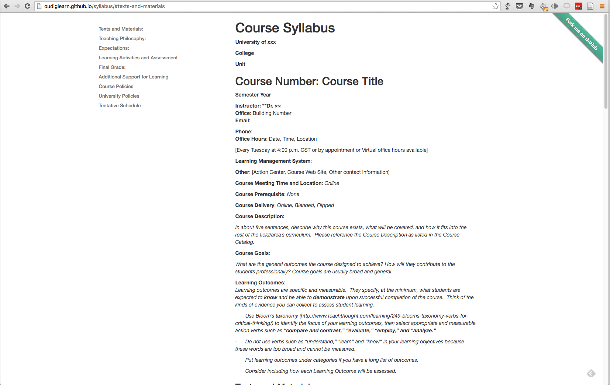
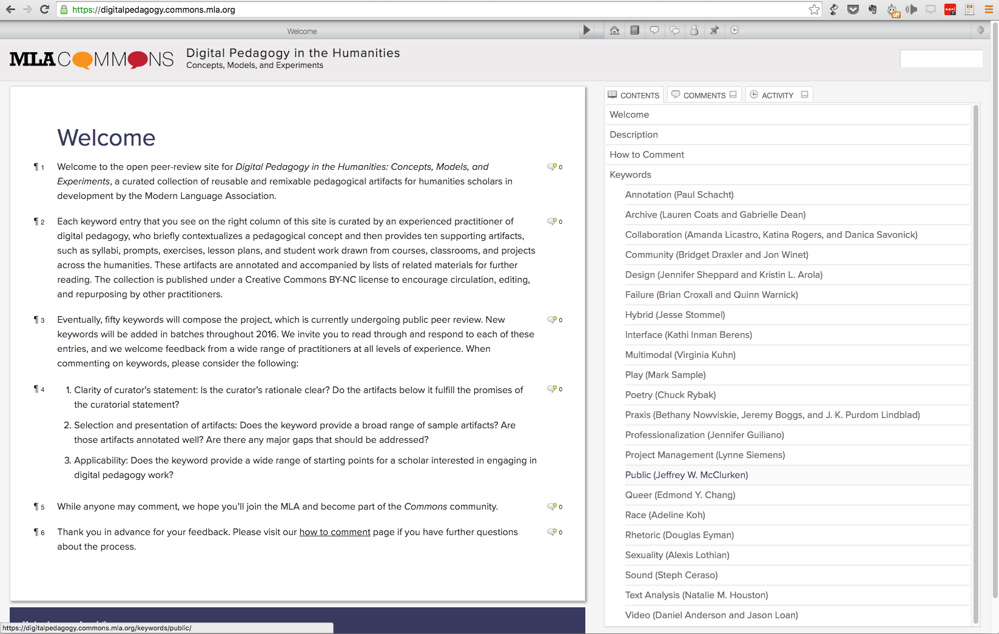

Fork U!
The Github workshop
Quick! Do this immediately!
Create an account on github.com and verify your email address.
Fork U! A GitHub Approach to Learning and Collaboration
Adam Croom
John Stewart
University of Oklahoma
http://www.ou.edu/content/cte/digital-learning.html
@acroom / @jstew511
view presentation at http://oudiglearn.github.io/olcinnovate-github/
fork presentation at https://github.com/oudiglearn/olcinnovate-github/tree/master/presentation

This work is licensed under a Creative Commons Attribution-NonCommercial-ShareAlike 3.0 Unported License.
You're probably saying to yourself...
"Isn't Github for super technical coders and hackers and the like?"
The answer is...
Yes, actually it is.
It is not built as a edtech tool.
But the way open-source coders think, document, and openly collaborate on their work can be an approach one can take pedagoically and in our profession. Our goal is to show you multiple applications.
What is Git?
- Git is an open source program for tracking changes in text files.
- It was written by the author of the Linux operating system, and is the core technology that GitHub, the social and user interface, is built on top of.
What is Github?
- GitHub is a web-based Git repository hosting service.
- Unlike Git, which is strictly a command-line tool, GitHub provides a Web-based graphical interface and desktop as well as mobile integration.
What is open-source?
- Open source software is software that can be freely used, modified, and shared (in both modified and unmodified form) by anyone.
- Today the concept of "open source" is often extended beyond software, to represent a philosophy of collaboration in which working materials are made available online for anyone to fork, modify, discuss, and contribute to.
What does open-source look like on Github?
Repository (or Repo)
- A repository is the most basic element of GitHub. They're easiest to imagine as a project's folder.
- A repository contains all of the project files (including documentation), and stores each file's revision history.
- Repositories can have multiple collaborators and can be either public or private.
Bootstrap Metrics
- 671 Contributors
- 36 Releases
- 41,174 Forks
- 11,743 Commits
- 6,233 Closed Pull Requests
- 12,723 Closed Issues
41,000 forks sounds like a big wedding reception...
Project Fork
- A fork is a personal copy of another user's repository that lives on your account.
- Forks allow you to freely make changes to a project without affecting the original.
- Forks remain attached to the original, allowing you to submit a pull request to the original's author to update with your changes.
- You can also keep your fork up to date by pulling in updates from the original.
Commit
- A commit (or revision) is an individual change to a file (or set of files).
- It's like when you save a file, except with Git, every time you save it creates a unique ID (a.k.a. the "SHA" or "hash") that allows you to keep record of what changes were made when and by who.
- Commits usually contain a commit message which is a brief description of what changes were made.
Pull requests
- Pull requests are proposed changes to a repository submitted by a user and accepted or rejected by a repository's collaborators.
- Each pull request has its own discussion forum.
Issues
- Issues are suggested improvements, tasks or questions related to the repo.
- Issues can be created by anyone (for public repositories), and are moderated by repository collaborators.
- Each issue contains its own discussion forum, can be labeled and assigned to a user.
Other cool stuff about Github to note
Github Pages
- GitHub Pages are public webpages hosted and published through Github.
- You can create and publish sites using Github Automatic Page Generator or you can simply host static HTML
Markdown Support
- Markdown is a simple semantic file format, not too dissimilar from .doc, .rtf and .txt.
- Markdown makes it easy for even those without a web-publishing background to write prose (including with links, lists, bullets, etc.) and have it displayed like a website.
Organizations
- Organizations are a group of two or more users that typically mirror real-world organizations.
- They are administered by users and can contain both repositories and teams.
Forking Syllabi

Forking Syllabi
- Fork a syllabus template and make it your own
- Add information about your school and course
- Commit your changes
Academic Peer Review

Academic Peer Review
- Use GitHub for editorial review of Kim Middleton's "Remix" article
- Change the metadata for the state of the article
- Add in constructive feedback
- Save your changes
Blogging with GitHub Pages
- Fork a Jekyll site
- Write a blogpost in Markdown
- Admire your new blog